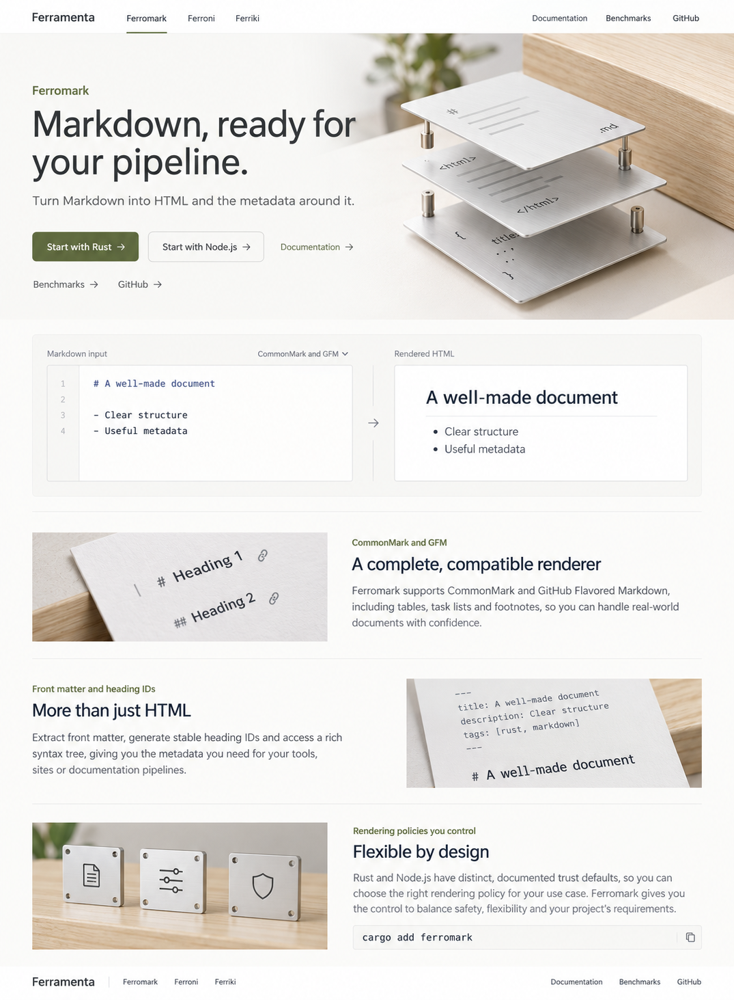
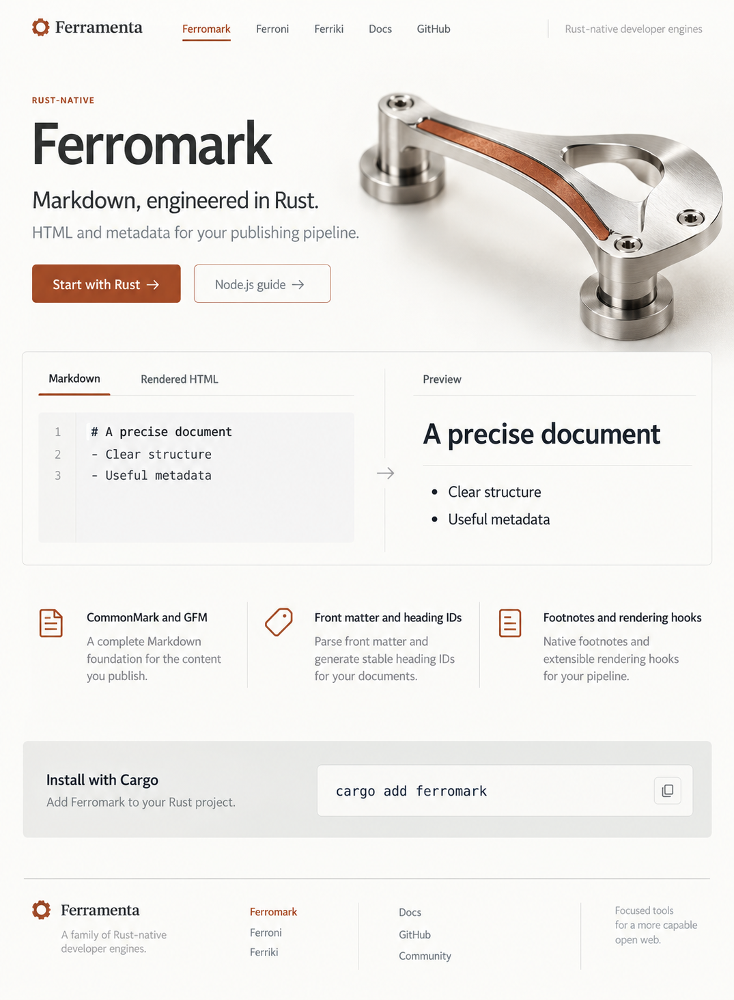

Round 01: Light mechanics
Concepts 01–10. Warm wood, light metal, diverse page structures. Includes the final images, three earlier variants, a gallery and the prompt set.
Ferramenta
Twenty-eight page designs across three rounds, with prompts and reusable assets.

Concepts 01–10. Warm wood, light metal, diverse page structures. Includes the final images, three earlier variants, a gallery and the prompt set.

Concepts 11–20. Rust-native positioning, satin steel, controlled oxide and fine fasteners. Includes three separate material and illustration assets.

Designs 21–28. Four complete pages per project, meaningful mechanical objects, readable source copy and recorded benchmark evidence.